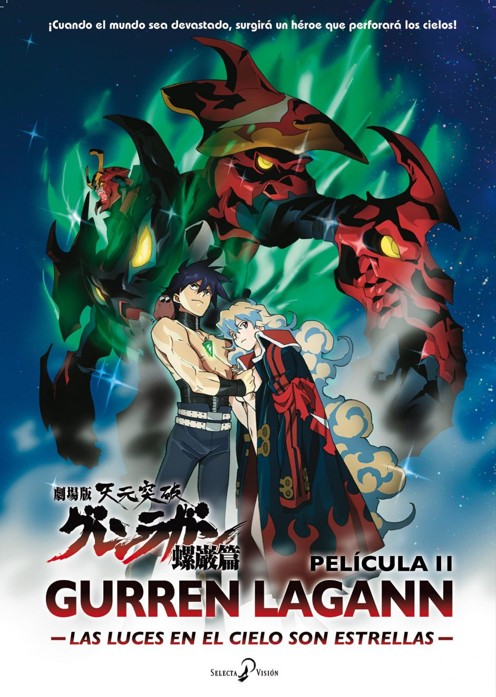
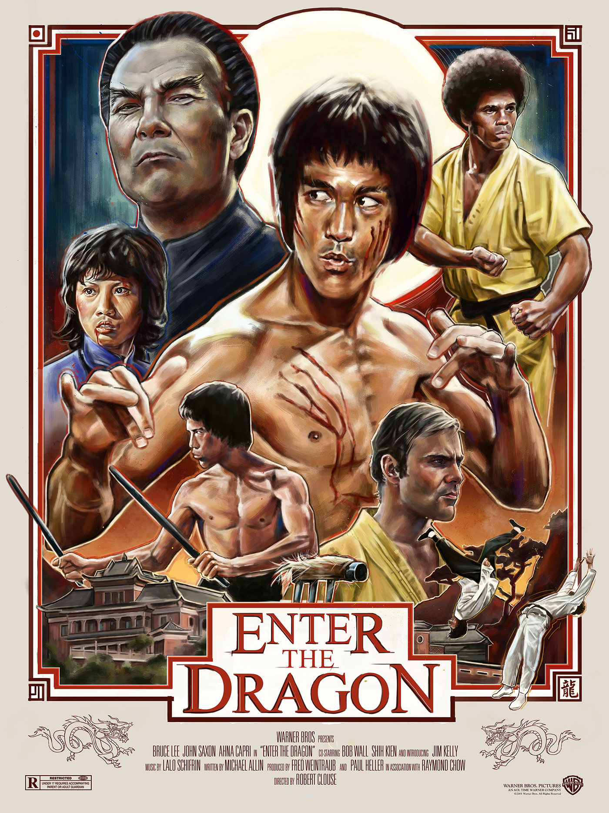
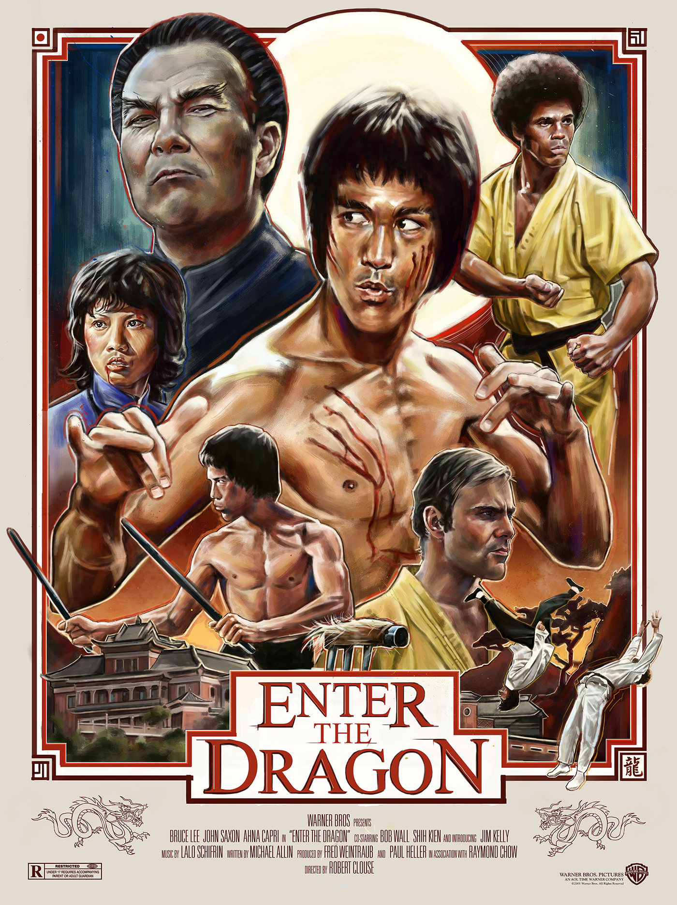

Si recuerdan cuando dije que trabajé como locutor durante un tiempo, viene mi sección favorita, mientras trabajaba mi parte del programa tenía que ver con el entretenimiento lo que incluía estar al pendiente de catalogos de series, carteleras de cine y estrenos. Por lo que durante un tiempo tuve que hacer de una especie de "Crítico" del séptimo arte. principalmente me interesan las peliculas y series de animación, más las de origen nippón, así que voy a centrarme más en ellas. Esto no implica que también comente sobre algunos directores,los cuales, son de mis favoritos como Martin Scorcese, Quintin Tarantino, Tom Reeves y Sam Reimi. Me gustaria iniciar con mis animaciones favoritas o los famosamente llamados "Anime" que vienen siendo las caricaturas de origen mayormente japonés que se originan de unas historietas llamadas "Manga" bueno una vez ya en contexto comienzo:
Profundizar en la trama de cada una sería extenderme un poco ya que cada una tiene tramas muy elaboradas a las cuales no les haría honor con un par de líneas invito a ver alguno que llame la atención ya que son obras de calidad y muy interesantes.

Ahora zanjado el tema del "Anime" me gustaría hablar del cine que la mayoría del público ama y aprecia. Como dije antes, tengo una amplia selección de directires favoritos ya que su estilo permanece marcado en cada cinta que nos entregan esos que tienen la capacidad de entregarnos una trama distinta pero emocionarnos cada vez. sin mucha dilación estas son mis favoritas:
 
